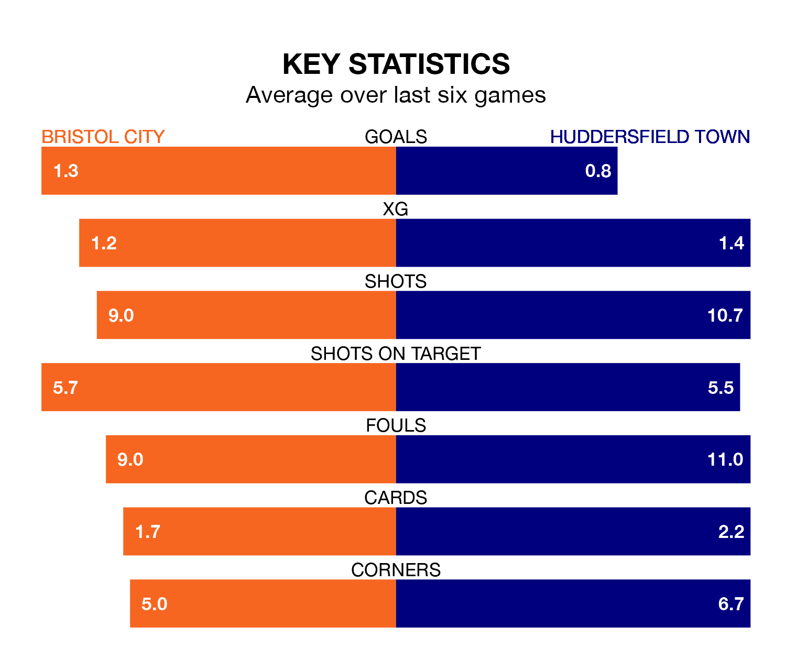

Bristol City host Huddersfield Town on Saturday at Ashton Gate in EFL Championship.
In their last league match, on Wednesday, City beat Blackburn Rovers 5-0 at home, with goals from Nahki Wells (two), Tommy Conway (two) and Anis Mehmeti.
Huddersfield lost, 4-1 away at Preston North End on Tuesday, with Josh Koroma scoring their goals.
In the last 10 years, City and Huddersfield have played each other on 14 occasions. City won eight of them, Huddersfield four, and they drew twice.
On average, the Robins scored 1.9 goals and the Terriers 1.1 in those matches.
Their last meeting was on December 9, when they played out a 1-1 draw.
Huddersfield are 21st in the table after 42 games, of which they have won nine and drawn 16, earning 43 points.
City are nine places ahead of Town in 12th, with 16 wins and nine draws putting them on 57 points.
With Max O’Leary between the sticks, the Robins can rely on one of the league's safest pair of hands. He has kept 12 clean sheets in his 42 appearances this season in EFL Championship.
In the Terriers' net, Lee Nicholls has seven clean sheets in 34 games. He has conceded a goal every 60 minutes, 60% more often than the 95 minutes between goals for O’Leary.
The hosts are in good form in EFL Championship, with four wins and a draw from their last six games.
With a win and two draws over that period, the away side's form is much worse – they have taken five points from 18, compared to City's 13.
With 46 goals in 42 games so far this season, Huddersfield are scoring at below the league average rate with 1.1 goals per game. And they are conceding more than average, letting in 69 goals at a rate of 1.6 per game.
City are also below average scorers, with 1.2 goals per game, compared to a league average of 1.3. They have conceded 1.1 goals per game.
Saturday's match will be refereed by Rebecca Welch, who has taken charge of 11 EFL Championship games so far this season, issuing one red card and booking 50 players. He has not awarded any penalties.
The last Huddersfield game Welch refereed was the 1-1 draw away at Stoke City on April 1. He is yet to oversee a match featuring City this season.
Updated: 10:01 (UTC), 12/04/24